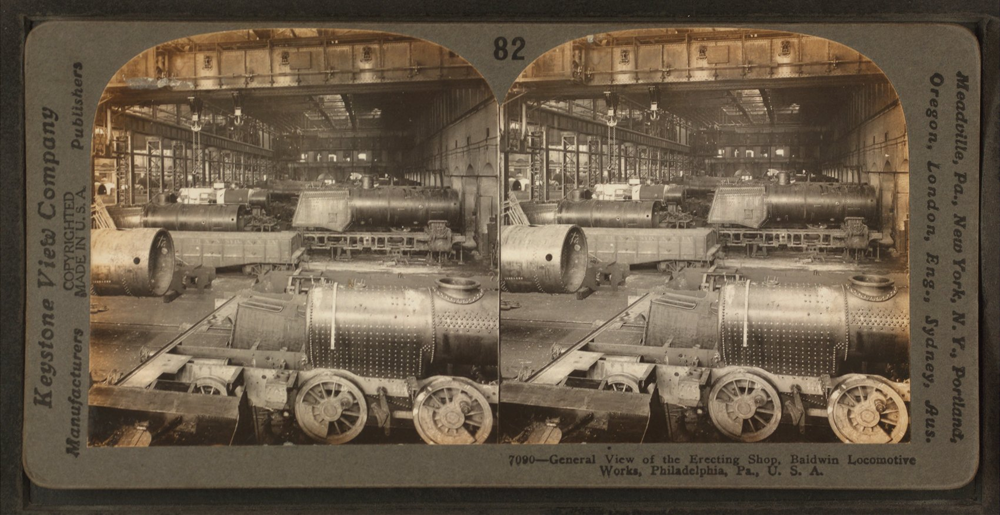
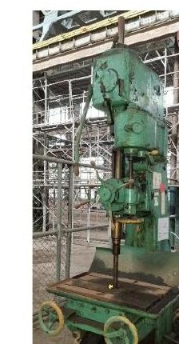
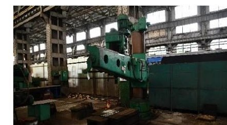

本章敘明展示緣起與基地脈絡。
本章依現有素材如實呈現緣起背景；惟受限於現有文件的性質，關於「為何選定此五種機具」以及「本展項於組立工場整體敘事中的定位」，目前查無任何論述性文件可供徵引。以下缺口說明留供業主與撰稿團隊後續補強。
工業遺產不是被觀看的標本,是可以被操作的記憶。
上述三項設計手段的共同精神，是把工業遺產從「被觀看的標本」轉為「可被操作的記憶」：訪客先透過金句建立比較性理解，再以親手操作驗證原理，最後回到現地機具完成認知閉環。
訪客抵達操作機台前，畫面處於「段落0 開場／待機」狀態：自動循環播放示範動畫，並以圖示（手輪／操作桿）閃爍提示訪客開始互動——搪床提示「轉動手輪啟動體驗」、刨床提示「轉動上方手柄啟動體驗」、鑽床提示「轉動進刀操作桿開始體驗」（workingfiles/boring_analysis_output.txt Slide 5；workingfiles/ppt_analysis_output.txt Slide 5；workingfiles/drilling_structure.txt 第94-116行）。
入場提示後，訪客依序經歷段落1（教學／基本設定，約15至25秒）與段落2、3（主體挑戰／精準加工，各約20至35秒），操作實體控制元件（手輪、旋鈕、操作桿依機具而異）完成指定任務，系統依準確度給予1至5星評分與即時視覺、音效回饋。各機具操作細節詳見肆章各節之互動設計說明。
挑戰完成後進入段落末段（完成頁）：畫面下方以五個機具圓點呈現「車削、銑削、鑽削、搪削、鉋削」通用機具體驗進度，剛完成的機具點亮；中央顯示「臺灣鐵道組立工場練習所」結業證書樣式，QR Code供訪客掃描紀錄本次體驗（可選）（workingfiles/boring_analysis_output.txt Slide 8；workingfiles/ppt_analysis_output.txt Slide 9；workingfiles/drilling_structure.txt 第169-178行）。緊接著的段落4「看看現地機具」，以3D地圖依序點亮該機種所有現地文物位置，字幕引導「走進工場，親眼看看這些機具吧！」，體驗三秒後自動淡出、重置回開場待機，形成一個可持續循環的閉環（reference/通用機具簡報架構.md 第21行）。
三具機床,三種身體經驗:搪床的孔、鉋床的面、鑽床的點。
搪削是針對已鑽出或鑄造完成的孔洞，以單刃搪刀進行擴孔與精修的加工工序。與鑽削相比，兩者分工明確：鑽床負責「打洞」，搪床負責「修準」——把孔徑、真圓度、同心度校正到精密尺寸，孔壁也隨之更為光滑，能修正鑽孔過程中產生的偏心、橢圓與歪斜。搪削必定接續在鑽孔或鑄孔之後進行，速度較慢，但精度遠高於鑽削，是大型箱體零件（如汽缸類內孔）孔加工的主要設備（reference/搪床原理_構造動作解析_2026-05-18.md 第8-26行）。
臥式搪床的主要構造包括床台、立柱、主軸頭、主軸與搪桿、工作台與床鞍，搪桿以合金鋼製成並經氮化處理，設計原則是「直徑盡量大、長度盡量短」以減少彎曲與振動（同檔第28-35行）。搪削由兩種運動配合完成：搪桿隨主軸旋轉的切削運動，以及沿孔軸方向的進給運動；依旋轉主體不同又分為刀具旋轉式（臥式）與工件旋轉式（立式）兩型（同檔第37-49行）。
互動設計說明——操作流程：依定稿簡報（2026年5月27日通過品保驗收），段落0開場／待機（15秒，自動循環播放，提示轉動大手輪啟動）→段落1「基本設定：調整搪頭」（25秒，轉動微調小圓鈕將孔徑數值設定至100.00mm）→段落2「精準擴孔」（35秒，轉動大手輪使搪桿沿Z軸向進給切削，孔壁由粗糙變光滑）→段落3「完成！通用機具體驗進度」（15秒，五機具進度圓點亮燈、結業證書與QR Code）→段落4「看看現地搪床」（15秒，3D地圖依序點亮台工11、364、8號）。整體開場後體驗時間約1分45秒（workingfiles/boring_analysis_output.txt Slide 4、6、7、8）。
感應與回饋：操作元件為雙旋鈕——實體大手輪（控制搪桿Z軸向進給／退刀，即時顯示孔徑深度數值）與微調小圓鈕（調整搪刀突出量以設定目標孔徑），機台左側另設六角扳手壁掛架供調整微調刻度使用（_context/PRD_2026-05-18_搪床互動機具腳本.md 第13-14行；workingfiles/boring_analysis_output.txt Slide 3）。回饋機制包含孔徑數值即時更新、目標對準時綠色確認符號、依「孔徑準確率＋真圓度誤差」評1至5星，並搭配主軸啟動聲、搪削切削聲、切屑飛濺聲、完成提示音等音效（workingfiles/boring_analysis_output.txt Slide 4、7）。
尺寸與配色：操作機台寬80cm×高145cm，螢幕整合於機台上半部並已修正為橫式16:9（原設計為直式，2026年5月27日重構時修正），下方為單一橢圓殼大手輪，左下另設微調小圓鈕；配色沿用全系列暗色工業HUD風格：背景#0a0a0a、面板#141414、強調橘#FF5A00、成功綠#00FF88（_context/PRD_2026-05-18_搪床互動機具腳本.md 第16-19行；walkthrough.md 第37行）。
刨床的加工原理，是以刀具與工件之間的往復直線運動，把金屬表面一刀一刀削平：刀具前進時切削，退回時不切削，準備下一刀（reference/刨床原理與互動腳本提案.html 第44-58行）。台北機廠現存的刨床依構型可分兩種脈絡：牛頭鉋床（台工33、34號）是中小型工件固定於工作台，刀具跟著滑枕來回移動切削；龍門鉋床（台工54號）則相反，是大型工件夾持在大型工作台上作直線往復運動，刀具固定於上方僅作微量進給——兩者可理解為「小型版」與「大型版」的刨平機，共同原理都是靠直線來回運動削平表面（_context/PRD_2026-05-27_刨床互動機具腳本.md 第13-16行；reference/刨床原理與互動腳本提案.html 第219-221行）。
互動設計說明——操作流程：依定稿簡報（經一次退件熱修後於2026年5月27日通過品保驗收），段落0開場／待機（15秒，鏡頭推近台工54，提示轉動上方手柄啟動）→段落1「原理教學：看懂刨床」（25秒，帶出科普核心「工件動，刀具削！」）→段落2「控制練習」（35秒，旋轉上方手柄設定切削深度，橘色安全區提示恰當的吃刀深度）→段落3「長平面挑戰」（35秒，把鐵軌／火車門軌道形狀的粗糙長工件刨平，依平整度與操作穩定度評星）→段落4「完成：看看現地刨床」（15秒，五機具進度亮燈、結業證書，並點亮台工33、34、54號位置）。整體體驗時間約2分05秒（workingfiles/ppt_analysis_output.txt Slide 4-9）。
感應與回饋：依業主特別指示，刨床互動僅使用「上方手柄」（下進給螺桿手柄）單一操作元件設定向下切削深度，機台刻意不設下方轉輪或大手輪，與搪床、鑽床的手輪邏輯明顯不同（walkthrough.md 第12-14、26行；_context/AGENT_SPEC_刨床簡報重構.md 第29行）。回饋機制包含橘色安全區判定切削深度是否恰當、震動值超標時的警示提示、依「平整度＋操作穩定度」評1至5星，音效含滑台往復聲、輕切削聲、過深震動警示聲、完成提示音（workingfiles/ppt_analysis_output.txt Slide 6-8）。
尺寸與配色：操作機台寬80cm×高145cm，螢幕為橫式16:9（配合龍門鉋床長型加工特色），操作機構僅螢幕上方單一手柄，配色沿用全系列暗色工業HUD風格（_context/PRD_2026-05-27_刨床互動機具腳本.md 第19-23行）。
鑽削的科普核心是「鑽頭旋轉進刀打洞」：鑽頭高速旋轉並沿軸向進刀，直接在實心材料上打出新孔，是金屬孔加工的第一道工序，速度快但精度較搪削低（reference/通用機具簡報架構.md 第70行；對照reference/搪床原理_構造動作解析_2026-05-18.md 第16-25行之鑽削／搪削對照表）。台北機廠現地鑽床鎖定兩台：台工20號直立鑽機、台工1510號（草稿內文稱「懸臂鑽床」，現場照片檔名則為「轉臂鑽床」，用詞尚未統一，詳見下方缺口）（workingfiles/drilling_structure.txt 第20-21行）。


互動設計說明（草稿，未經業主核准）——操作流程：依草稿十頁逐頁文字，段落0開場／待機（15秒，鏡頭拉近工作台，鑽頭加速旋轉，提示轉動進刀操作桿啟動）→段落1「教學：操作基本功能」（15秒，自由轉動進刀操作桿在工件上鑽10mm孔，再示範用刻度盤精準設定深度）→段落2「鑽出特定深度」（20秒，畫面顯示目標深度如15mm，訪客先轉動深度設定刻度盤對齊，再用進刀操作桿往下鑽，依設定值與目標值差距mm評1至5星）→段落3「完成！通用機具體驗進度」（20秒，五機具圓點亮燈、結業證書、QR Code）→段落4「完成：現地鑽床位置畫面」（工場全景圖點亮台工20、1510號位置）。開場後體驗時間約1分35秒，草稿標示目標客群為「國小二年級以上」，與搪床、刨床PRD標示的「國小至國中生」略有差異（workingfiles/drilling_structure.txt 第43-91、152-160行）。
感應與回饋：草稿設計的操作元件並非「手輪」，而是「進刀操作桿」（逆時針旋轉，主軸下降鑽孔）與「鑽削深度設定刻度盤」（可預設自動停止深度）兩個元件，音效含主軸啟動聲、鑽頭轉動嗡嗡聲、鑽削嗡嗡聲、切屑飛濺聲（workingfiles/drilling_structure.txt 第80、108-110行）。
尺寸：草稿簡報第3頁標示「1200mm」「1550mm」與「鑽床展示櫃」字樣，惟標註對象寫的是「展示櫃」而非「操作機台」，語意含混，且單位換算後（120×155cm）與PRD詢問的車床規格108×149cm並不相符（workingfiles/w_boring_structure.txt 第56-59行，此檔為誤植的鑽床大綱頁，但為唯一含尺寸數字的來源）。
草稿於PRD階段列有四項待業主／Tech Lead答覆之待答項，本次撰寫報告書時逐一查核現況，處理結果如下：
教學設計原則上，不出現「X軸／Z軸」等專業術語，手輪／操作元件說明以圖示優先於文字，強調透過「一句話金句」建立跨機具的比較性理解，例如鑽削與搪削的先後關係、牛頭鉋床與龍門鉋床的大小對照（_context/PRD_2026-05-18_搪床互動機具腳本.md 第35行；reference/刨床原理與互動腳本提案.html 第219-221行）。
評量與正向回饋機制方面，各機具挑戰段落均以「1至5星」評分呈現學習成果——搪床依孔徑準確率與真圓度誤差、刨床依平整度與操作穩定度、鑽床依深度設定值與目標值差距——並以結業證書、QR Code紀錄作為完成全套五機具體驗的正向誘因，具備初步的闖關式教案雛形（出處同本章前述及肆章各機具節）。
搪床、刨床操作機台尺寸皆為寬80cm×高145cm（_context/PRD_2026-05-18_搪床互動機具腳本.md 第17行；_context/PRD_2026-05-27_刨床互動機具腳本.md 第20行）。車床操作機台尺寸為108×149cm，列於此處僅供比例參照，非本次三機具之一（_context/INDEX.md 第32行）。刨床局部標註與整機尺寸之對應關係、鑽床操作機台實際尺寸皆另有缺口，詳見肆章各機具節之說明，不在此重複列出。
搪床螢幕原為直式，2026年5月27日重構時修正為橫式16:9，整合於機台上半部（walkthrough.md 第37行）。刨床螢幕形式為橫式16:9，設計理由是配合龍門鉋床長型加工特色（_context/PRD_2026-05-27_刨床互動機具腳本.md 第21行）。
搪床採雙旋鈕設計——實體大手輪（Z軸向進給）與左下微調小圓鈕（設定孔徑），另配六角扳手與壁掛架（workingfiles/boring_analysis_output.txt Slide 3；_context/PRD_2026-05-18_搪床互動機具腳本.md 第13-14行）。刨床僅設上方手柄（下進給螺桿手柄），機台無下方轉輪，此為業主明確指定之限制（walkthrough.md 第14、26行）。鑽床草稿設計為「進刀操作桿＋鑽削深度設定刻度盤」，但未經業主正式核准，狀態仍待確認，詳見肆章鑽床節（workingfiles/drilling_structure.txt 第80行）。
| 用途 | 色票 | 色碼 |
|---|---|---|
| 背景 | 近黑 | #0a0a0a |
| 面板 | 深灰 | #141414 |
| 強調色 | 強調橘 | #FF5A00 |
| 成功色 | 成功綠 | #00FF88 |
本案自帶機檢:每具機具附自動化驗證腳本,驗收不靠口說。
repo內以find指令確認全域僅存在兩支verify_*.py腳本，分別對應搪床、刨床兩份定稿簡報，鑽床、車床、銑床皆無對應驗收腳本。
搪床簡報歷經四輪「DONE→VERIFIED FAIL→DONE→VERIFIED PASS」反覆，最終於2026年5月27日10:30通過VERIFIED|PASS（AGENT_SIGNAL.log 第1-11行）。刨床簡報經產出、複核後一度VERIFIED|FAIL（12:27:07，因進度條命名偏離規範、地圖漏標台工34號），熱修復後於12:44:00通過VERIFIED|PASS（AGENT_SIGNAL.log 第12-17行；walkthrough.md 第70-73行）。鑽床方面，AGENT_SIGNAL.log全文查無任何鑽床相關REQUEST／DONE／VERIFIED紀錄，代表鑽床從未進入過驗收流程（_context/INDEX.md 第11、120行）。
以關鍵字（維護、保養、故障排除、耗材、軟體更新、維運、防護等級等）對repo內_context/、reference/、workingfiles/、rules/全文檢索，查無任何一筆結果。